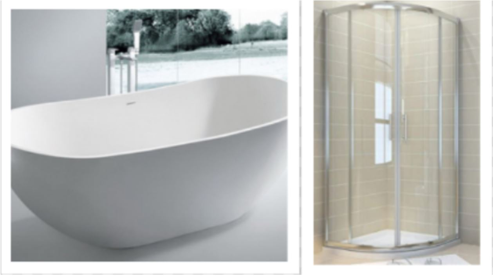
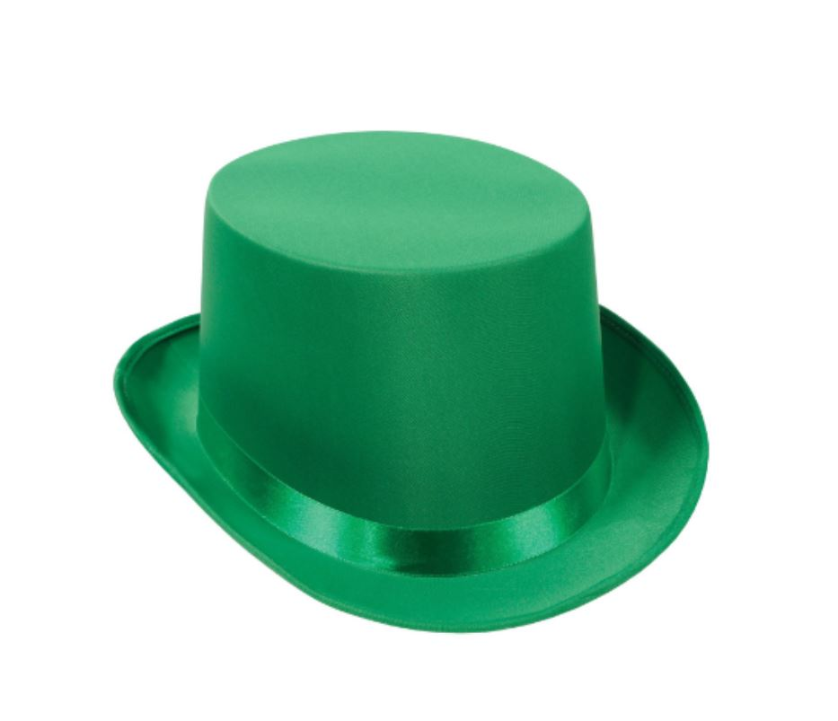
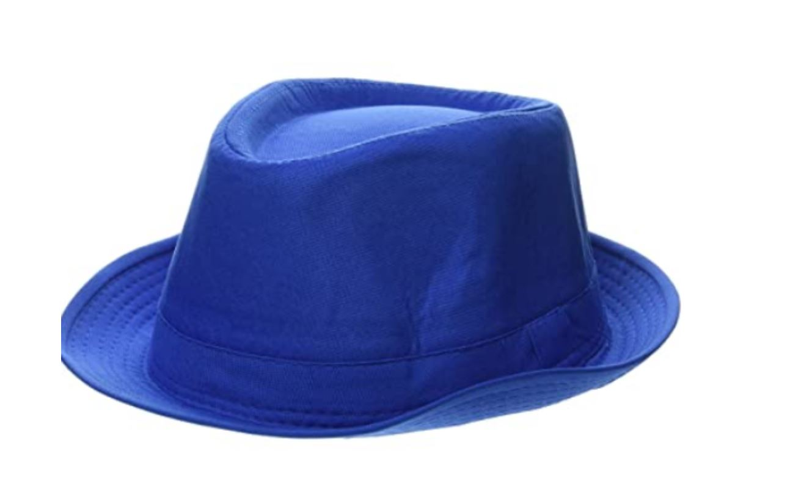

Home |
Recipes |
Articles |
Contact |
Art gallery |
Ever tried solving a maths or physics problem without knowing a proper method?Imagine how difficult and terrible it can be....... Similarly in life when we get a problem for which we have to reach to conclusions or find a proper solution we don't have a method to apply and get our answers.Hence leading to confusions,dilemma,anxiety etc.And if by some ways we decide a solution and unfortunately it goes wrong ,it leads to more stress and anxiety . So don't worry!! Here is a technique u can apply to and get most of your problem solved creatively-THE SIX THINKING HATS!!
While applying this technique we will follow some instructions-
*follow a proper sequence of hats...changing sequence may change the outcome
*all hats must be used ...leaving anyone may not give desired solution
*have a set of paper/pens/colour markers
*if a group is trying to solve a problem mocking or making fun of other's ideas must be strictly prohibited
* we don't need these colour hats in real it can just be drawn on a sheet of paper or we can imagine it in our minds
Lets take an example to understand how to use these hats to solve a problem.
Suppose we plan to renovate our bathroom.Bathroom is small it cant accommodate a bath tub and a shower cubicle at the same time.How we will decide to make a proper choice on renovating our bathroom using these options in the best possible way.........
1.WHITE hat
*its the hat that deals with facts or actual information we have about a problem
eg: -bath room is small
-only bath tub or cubicle can be used at a time
-80% of the world population doesn't posses a bath tub
2.RED hat
*it deal with our gut feeling/emotion towards a problem
eg:-bathroom should feel amazing
-I should be able to get a peaceful and refreshing bath
3.GREEN Hat
*its the hat wearing which we think of creative ideas and solutions we can have for this problem
eg:-a bath tub with attached shower
-a shower cubicle with a bench
you can definitely add your own ideas to it!!
4.YELLOW hat
*while using this hat think about the benefits of using these ideas
eg:-bath tub with shower can give us a really relaxing bath in a lying down position
-bath cubicle with bench is cheap and uses less water
5.BLACK hat
*using this hat we think of the negative impact our choice may cause
eg:-bath tub installation is costly and uses lots of water
-bath cubicle may fail to provide a luxurious bathing experience
BLUE hat
*its the final hat which coordinates through all the hats and gives a proper out come
eg:-as my bathroom is small and i don't want to spend money extravagantly and also show a careless attitude of wasting water for my luxury i would definitely go for the "BATH CUBICLE" or would rather go for bath cubicle with a bench/seat for relaxing experience.
PROBLEM SOLVED!! So this is a six hat technique a creative tool developed originally Edward de Bono and published in his book under the same name....It's an excellent technique for correct decision making if used mindfully.......